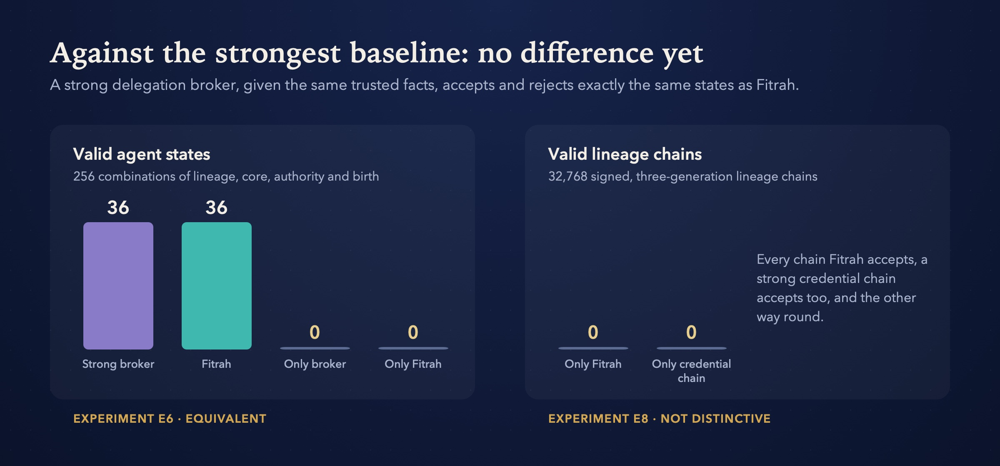

Research paused · seeking collaborators
فطرة
Fitrah
Hereditary trust for autonomous AI agents
Can an agent be born with trust it can’t shed, and never hold more authority than its parent may delegate?
The question
Can a child agent inherit a mandatory set of rules, and be stopped from ever holding more authority than its parent is allowed to hand down?
As agents start to create other agents, delegate tasks and act on real systems, “the model was told not to” isn’t a security control. Fitrah separates what a model does from what it is allowed to do, and enforces the second outside the model, so the guarantees hold with no AI model present at all.
The model may…
- reason, learn and adapt
- behave adversarially
- try to create new agents
- ask for any action
The enforcement layer decides…
- which rules every descendant must inherit
- what authority each agent can use
- what it may hand down, and which new agents are valid
- which sensitive actions actually run
Results, honestly
Enforcement beats prompts. Against the strongest baseline, it ties.
vs 10 when the rules were only in the prompt
no counterexample, within tested limits
no difference yet
not hidden or rerun away


What would restart Fitrah
Any one of these would change the verdict
Fitrah’s current rules can be matched by a strong delegation broker. Research resumes the moment someone finds something a broker can’t do. Here is what that would look like.
A property a broker can’t encode
A matched experiment where a strong broker, given the same trusted inputs, still can’t express a hereditary guarantee Fitrah enforces.
Assurance across runtimes
A working demonstration that verifies an agent from authorised birth to real-world effect across different runtimes, judged by an independent attack and fault oracle.
A formal group-level failure
A proof that individually allowed actions by several agents produce a prohibited outcome that per-agent rules can’t prevent, and a constraint that can.

Who’s behind it
Zeeshan Mehdi
CTO by day, agent tinkerer by night, in Dubai. I build open-source AI agents that ask before they act, in English and Arabic, and I started Fitrah to find out whether that trust could be built in from birth rather than added later.
Collaborate
Paused, not finished. Pick it up with us.
Fitrah was paused on 23 October 2026, when research moved to discovering how multi-agent workflows fail. The code, evidence and open questions are all public, and new collaborators are welcome to restart it.
- STEP 1Pick a questionStart from an open question or one of the restart criteria above, and say hello in Discussions.
- STEP 2Propose a fair testState your hypothesis, the strongest baseline, the success measure and when you’d stop, before running anything.
- STEP 3Run it and publish togetherResults, negative ones included, go into the shared record, with credit or co-authorship agreed up front.